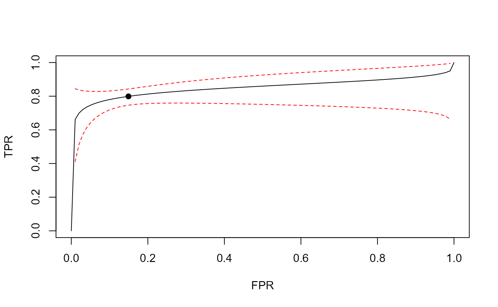
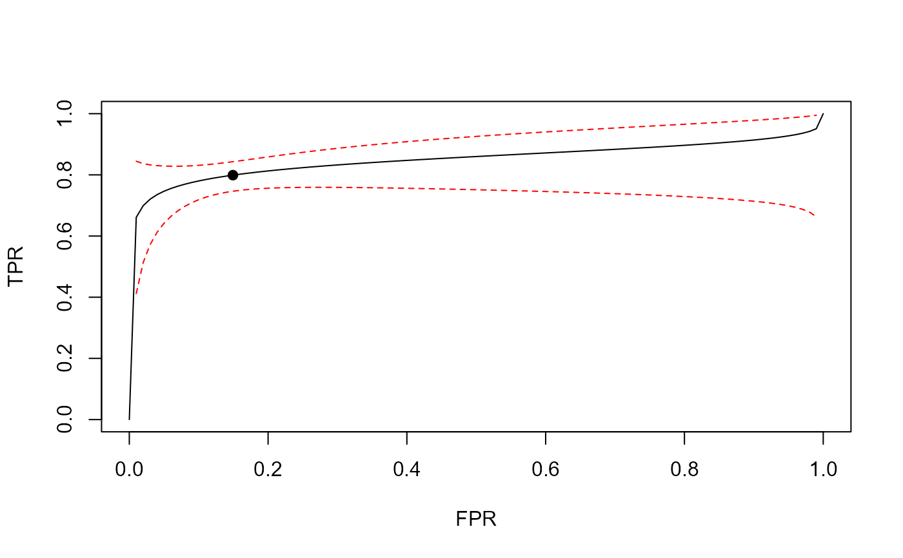

Plot the SROC curves
SROC(
object,
sroc.type = c("sroc", "hsroc"),
sroc.cols = gray.colors(ncol(as.matrix(object)), gamma = 1, start = 0, end = 0.5),
sroc.lty = 1,
sroc.lwd = 1,
add.spoint = TRUE,
sp.pch = 19,
sp.cex = 1,
plot.ci = FALSE,
sroc.ci.col = "red",
sroc.ci.lty = 2,
sroc.ci.lwd = 1,
ci.level = 0.95,
xlab = "FPR",
ylab = "TPR",
addon = FALSE,
...
)Arguments
- object
(1) The result from function
dtametasa.fcordtametasa.rc(single curve); (2) a matrix of which the rows arec(u1, u2, t1, t2, r)(multiple curves); (3) a vector ofc(u1, u2, t1, t2, r)(single curve).- sroc.type
Plot Reitsma's SROC curve(
"sroc") or Rutter's HSROC curve ("hsroc"),- sroc.cols
Set a vector of colors for single/multiple SROC curves. Default uses grey's colors.
- sroc.lty
Line type of SROC curve.
- sroc.lwd
Line width of SROC curve.
- add.spoint
Whether to add the summary point on the SROC curve.
- sp.pch
Type of the summary point.
- sp.cex
Size of the summary point.
- plot.ci
Whether to plot the confidence intervals of the SROC curve. It is only for the result from function
dtametasa.fcordtametasa.rc- sroc.ci.col
Colors of the confidence intervals.
- sroc.ci.lty
Line type of the confidence intervals.
- sroc.ci.lwd
Line width of the confidence intervals.
- ci.level
Significant level of the confidence intervals.
- xlab
Label of x-axis.
- ylab
Label of y-axis.
- addon
Whether to add the SROC curves onto an existed plot. Default is
FALSE, to start from a new plot.- ...
Other augments in function
plot.defaultor functioncurve
Value
SROC curves
See also
Examples
p.seq <- seq(1, 0.5, -0.1)
sa1.seq <- sapply(p.seq, function (p) dtametasa.fc(IVD, p)$par)
SROC(sa1.seq, sroc.type = "sroc")
 SROC(sa1.seq, sroc.type = "hsroc")
SROC(sa1.seq, sroc.type = "hsroc")
 sa.fit <- dtametasa.fc(IVD, p = 0.7, sauc.type = "sroc")
sa.fit
#> $par.all
#> mu1 mu2 tau1^2 tau2^2 tau12 c1^2 c2^2 beta alpha sroc sens
#> 1.380 1.740 0.355 0.713 -0.178 0.500 0.500 2.000 -4.290 0.851 0.799
#> spec
#> 0.851
#>
SROC(sa.fit, sroc.type = "sroc", pch = 19, plot.ci = TRUE)

SROC(sa.fit, sroc.type = "hsroc", pch = 19, plot.ci = TRUE)
sa.fit <- dtametasa.fc(IVD, p = 0.7, sauc.type = "sroc")
sa.fit
#> $par.all
#> mu1 mu2 tau1^2 tau2^2 tau12 c1^2 c2^2 beta alpha sroc sens
#> 1.380 1.740 0.355 0.713 -0.178 0.500 0.500 2.000 -4.290 0.851 0.799
#> spec
#> 0.851
#>
SROC(sa.fit, sroc.type = "sroc", pch = 19, plot.ci = TRUE)

SROC(sa.fit, sroc.type = "hsroc", pch = 19, plot.ci = TRUE)